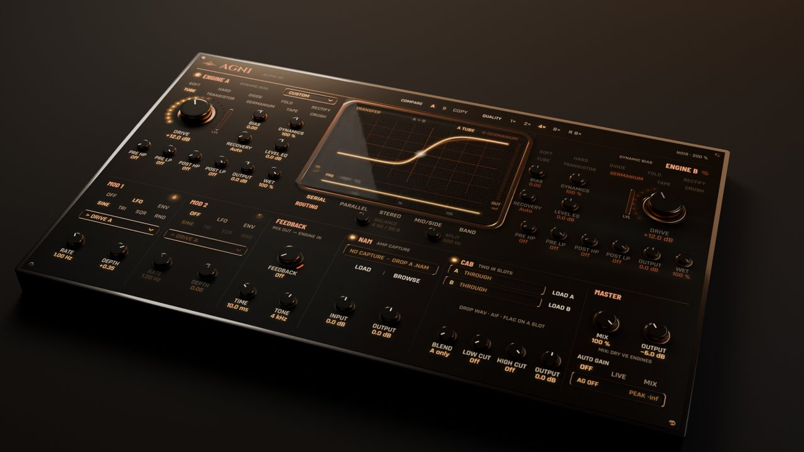
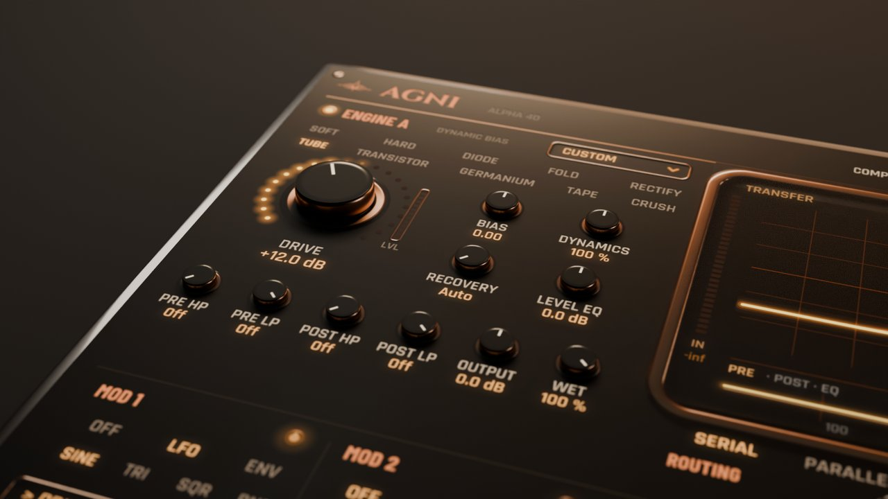
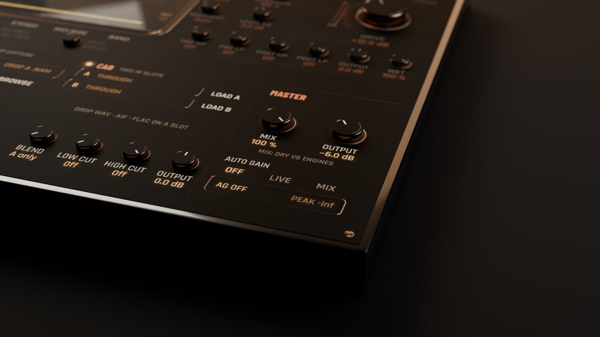
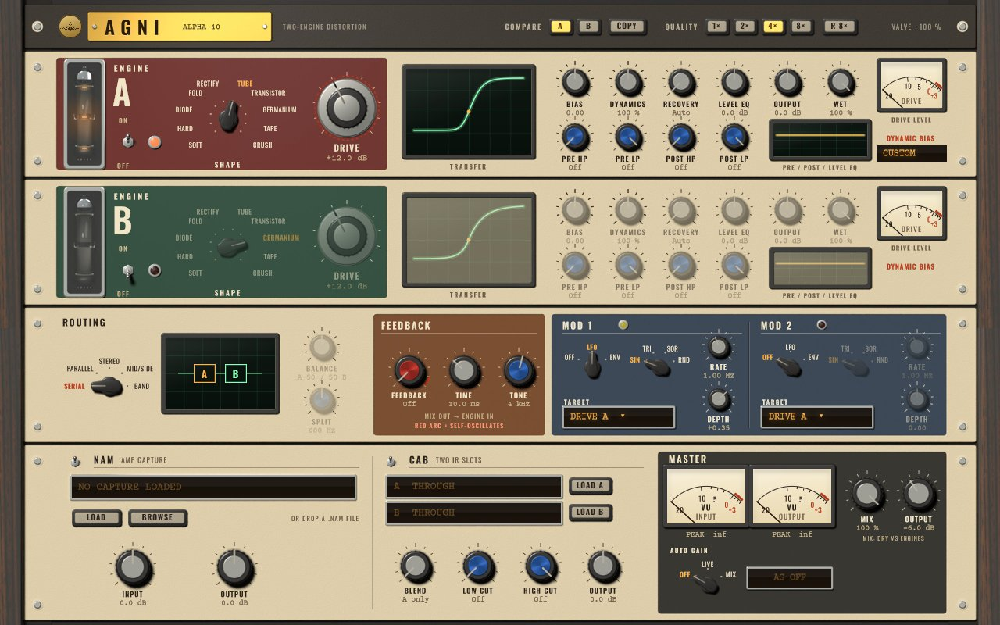

Two engines. Ten shapes.
Two distortion engines, and each one picks from the same ten shapes. Then five ways to wire them, a feedback loop, a capture slot and cab IRs. Engine A can also turn into one of eight pedals.. I basically wanted my whole dirt rack in one box.

Pyre skin · 3D render
Everything between clean and totally gone.


Pedal models
Flip Engine A from Custom to a pedal: Clean Boost, Tight Boost, Overdrive, Fuzz, Filter Distortion, Distortion, Metal or Octave Fuzz. Each one gets the three knobs you expect, Drive, Tone and Level, from 0 to 10. I fitted them to analysis and community captures of real pedals, clean blend and tone circuits included. Octave Fuzz even has its own octave-up stage. Switch back to Custom and your own engine settings come right back.
8 pedals · Drive · Tone · LevelTwo engines, ten shapes
Each engine grabs its own shape from the same ten: Soft, Hard, Diode, Fold, Rectify, Tube, Transistor, Germanium, Tape and Crush. Turn Drive and Bias and the scope draws the transfer curve live.. honestly I could watch that thing all day.
2 engines · 10 shapesRoutings, feedback and modulation
Five ways to wire the two engines together, and a feedback loop wrapped around both. Two modulators (LFO or envelope) can push drive, tone, bias or balance around while you play.
5 routings · feedback · 2 modsCapture and cab
Drop a neural capture (.nam) in after the engines, with a gate and a tight, mid or bright voicing in front of it. Then blend two cab IRs to taste. Oh, and Render Quality lets offline bounces run at a higher oversampling than you play at.
Capture slot · cab A/BOk, have a listen.
Hit play and flip between Dry and Agni. I matched the loudness on both, so you're hearing what it actually does.. not just "louder sounds better".
Watch the walkthrough.
Both engines, the router, the loop, the amp and cab slots, and a tone in two minutes.
I'd rather show you than tell you.
I ran every one of these offline through the plugin itself at 48 kHz. The settings I used are under each plot, so you can check my work.
Pick a finish.
These are straight from the plugin, no mockups. Click around.. I spent way too long on some of these.

Want to try Agni?
Early access (beta): it works and I support it, but I'm still finishing it. Every update until 1.0 is free.
VST3 · Windows 64-bit · licence, trial and signed updates right inside the plugin